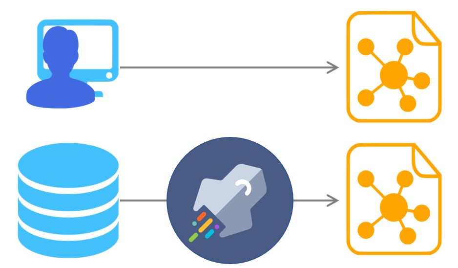
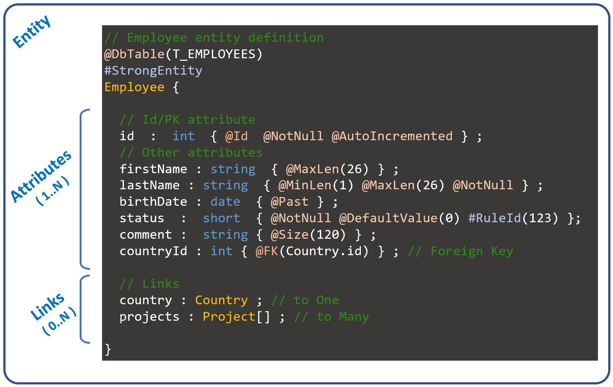

A model consists of entities, attributes, and links between entities in a functional domain.
A model is simply a directory containing a set of “.entity” files plus a “model.yaml” file.
All files are "text files" editable with any text editor or IDE.
There are two ways to create a model :
- create a new model from scratch
(an empty model which will be enriched manually)
- create a new model from a relational database
(an entity is created for each table with the relationships between entities)

An entity is composed of attributes and links defined with a simple syntax (a basic DSL).

Each attribute is strongly typed.
A link can reference a single entity ("to one" relationship) or a list of entities ("to many" relationship).
"Annotations" and "tags" provide additional data in order to obtain an accurate definition of each entity.
As Telosys was designed to generate any type of language, its model uses “neutral types”.
Each "neutral type" will be converted to the target language type during the generation phase.
The model syntax provides many “annotations”.
An annotation is a predefined word starting with "@" that can be used to add more precision to an entity, attribute, or link.
The annotations are intended to deal with the most frequent needs.
For specific needs it is possible to use "tags".
A tag is any word starting with "#", it is then used in templates when generating code.
Tags are useful to extend the model with specific information, so the model can be adapted to all situations
The Telosys model was designed from its first version to support composite primary keys (and therefore composite foreign keys).
A composite primary key is simply defined by using multiple "@Id" annotations.
It's now possible to do everything with the DSL model.
So the old "database model" (in XML) is no longer supported since Telosys 4.0